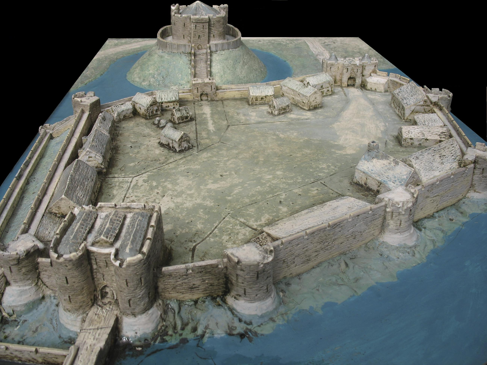

Exploring Medieval Castle Architecture
Medieval castles were not only imposing structures but also architectural marvels. They were designed to provide defense, security, and a sense of power to their inhabitants. Explore the key architectural elements that defined the grandeur and functionality of medieval castles.
1. Keep or Donjon
The keep, or donjon, was the central and most fortified structure of the castle. It served as the residence of the lord or lady, as well as the last line of defense in times of attack.
2. Curtain Walls
Curtain walls surrounded the castle, providing a defensive barrier. They were made of stone and fortified with towers, allowing defenders to guard the castle from above.

3. Towers
Towers were strategically placed along the curtain walls to provide additional defensive positions and vantage points. They varied in shape and size, including round, square, and corner towers.